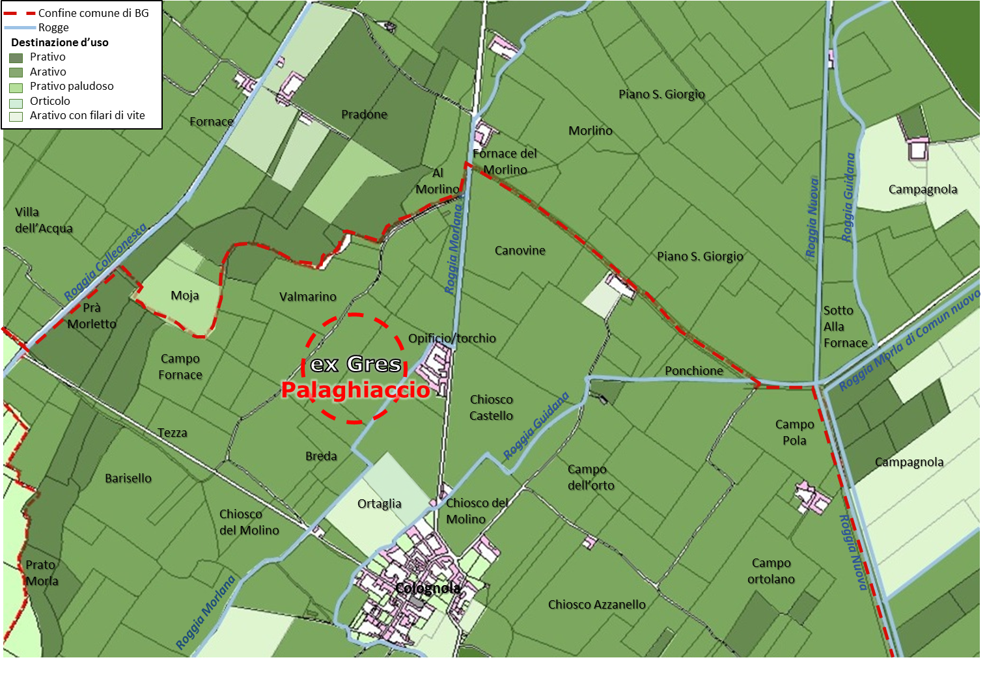
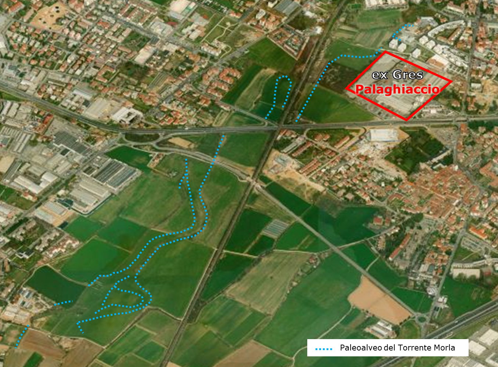

| Uso del suolo storico |
|
| Al fine di mettere in evidenza le caratteristiche e le
specificità morfologiche dell’area di nostro interesse è stato ricostruito lo
storico dell’uso del suolo, mediante l’analisi del catasto prodotto in epoca
austriaca (1853), consultabile on-line sul sito del SIGI (Sistema Informativo
Geografico Integrato) del Comune di Bergamo (http://territorio.comune.bergamo.it/catasto-storico/catasto-storico-anno-1853). | |
| Il catasto austriaco del 1853 | |
|  L'uso del suolo storico (1853) mette in evidenza la funzione prettamente agricola della zona dell'ex-Gres, oltre a mostrare, con il colore verde scuro, il percorso del paleoalveo del torrente Morla | |
| All’epoca delle rilevazioni catastali l’area dell’ex-Gres era
inclusa nel comune di Colognola, a testimonianza del legame storico esistente
tra l’insediamento industriale e il centro abitato, come già sottolineato
precedentemente. Dalla lettura di tale carta si ricava che il territorio in
esame era costituito principalmente da lotti destinati all’arativo
adaquatorio, ossia campi destinanti alla coltivazione dei cereali, che
necessitavano di una irrigazione abbondante, a questi si affiancavano
alcuni lotti di ortaglie. I terreni a ovest dell’ex-Gres, che corrono
quasi paralleli alla roggia Colleonesca, identificati nella carta da un
verde scuro, consentono di visualizzare il tracciato del paleoalveo
del torrente Morla. Il letto dell’antico fiume presenta terreni
molto umidi, ideali per la coltivazione dei prati a fieno per il
nutrimento del bestiame, anche con le marcite, come già accennato
precedentemente. I designatori presenti nel catasto rimarcano l’uso agricolo dell’area, nonché il legame acqua/coltivazione, come per esempio Valmarino, che indica una valle ricca di acqua, Moja, a indicare un terreno paludoso, Morlino, che si riferisce alla presenza della roggia Morlana, Villa dell’Acqua. Al paesaggio agrario di età medioevale rimanda invece il toponimo Breda, un termine che indica appezzamenti di particolare valore, situati in prossimità dei nuclei abitati, recintati e gestiti direttamente dai proprietari. Altri designatori, come Campo dell’orto, Campo Ortolano, Ortaglia rimandano alla specificità della produzione agricola dell’area, così come Pradone (prato grande), Prà Morletto, Prato Morla sottolineano la presenza di prati coltivati a fieno, adiacenti alle rogge. Alcuni designatori rimandano, invece, alle attività produttive che si sviluppano lungo i canali, inframmezzate ai campi, come Fornace del Morlino, Sotto alla Fornace, Campo Fornace, Chiosco del Morlino, mentre altri richiamano la presenza di diverse forme di insediamento, come Tezza, ad indicare un piccolo agglomerato di case situate vicino ai terreni coltivati. Tenendo conto di queste informazioni, quindi, si può auspicare, nella progettazione dell’area, un recupero della sua funzione agricola, con la realizzazione di orti urbani (in parte ancora oggi presenti lungo l’asse della ferrovia). | |
 Il paloeoalveo del torrente Morla oggi: la
differente altimetria è sottolineata dal diverso colore della vegetazione dovuta
alla particolare umidità di questa area | |